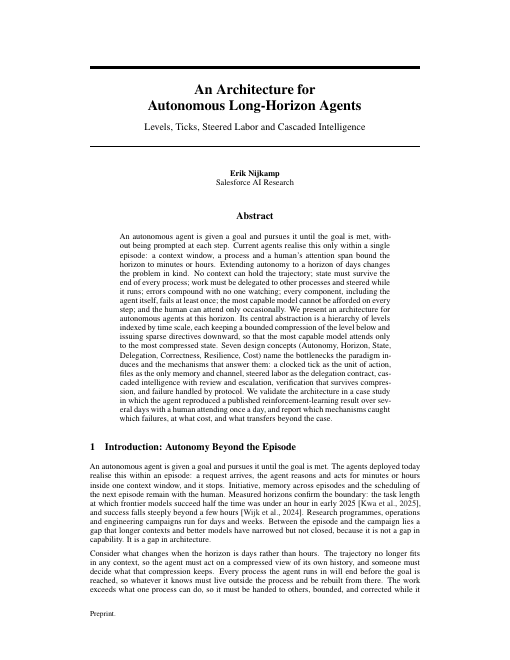
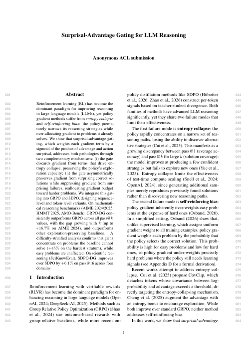
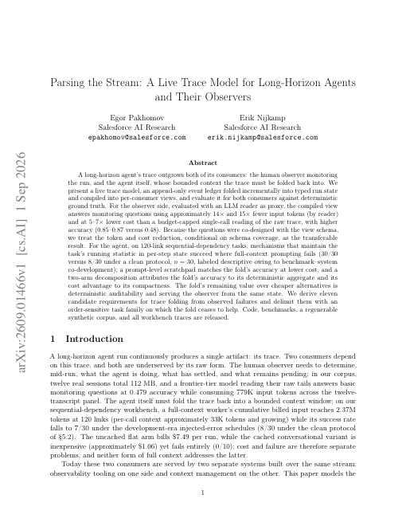
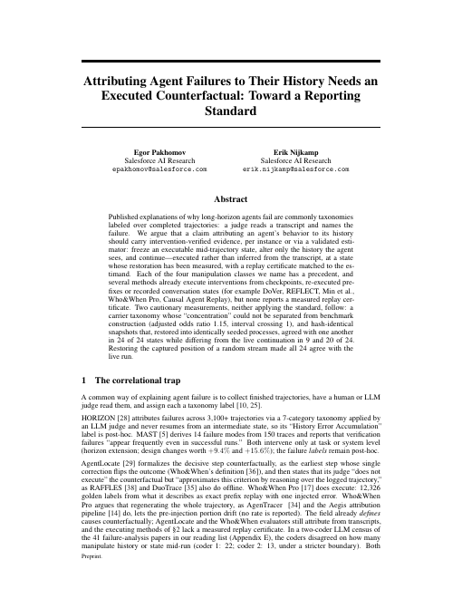
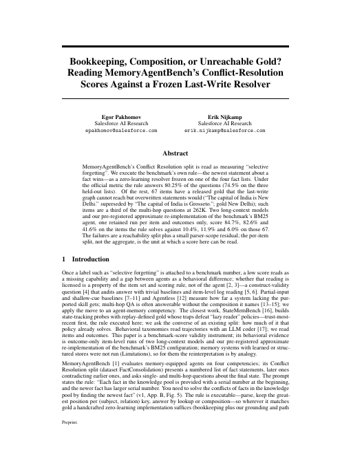
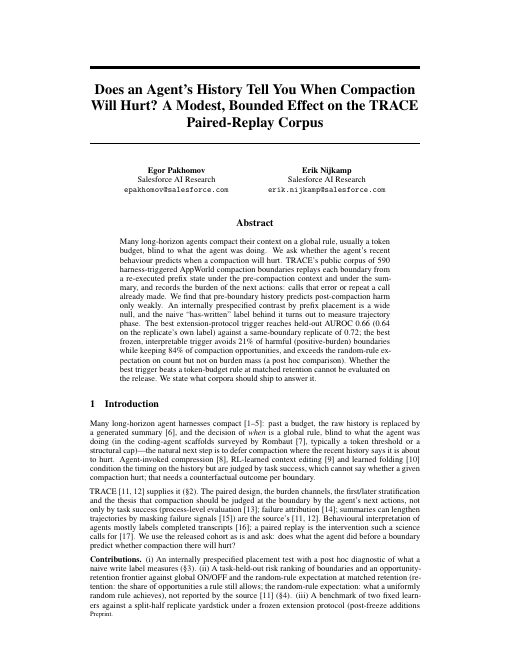

01 · Goal
Long-horizon autonomy.
Agents that pursue one goal for days, with a human attending once a day.
02 · Vision
The horizon grows one unlock at a time.
Runs end within an hour.
The context window fills. The process dies. No one is checking a step, so errors compound.
A day.
State in files, ticks, resume. The agent architecture buys the horizon before any training.
A week.
Compression and cheap labor. Judgment on top, routine work below, attention where it is needed.
Weeks, and beyond.
Reinforcement learning per vertical. The last mile is reliability, and the runs are still going.
03 · Thesis
Two trends converge.
Open models keep getting better and cheaper. Task horizons keep extending as autonomy grows. Where they meet, the last mile is reliability, won per vertical.
04 · Program
Three levers, one foundation.
Capability first, then cost. Every result is measured on the same yardstick.
The harness
The agent architecture, optimized. Also the honest baseline.
Buys us the horizon before any training, and one yardstick for every result.
The environment
State control. More learning per rollout.
Buys us affordable long-horizon training. Longer tasks come in reach.
The algorithm
Less variance in the learning signal.
Buys us the success rate over the last mile, the primary measure.
05 · One loop
The harness acts. The environment answers. The algorithm learns.
06 · Papers
What we have written so far.
-

The harnessAn Architecture for Autonomous Long-Horizon Agents
A hierarchy of levels by time scale lets an agent pursue one goal for days with a human attending once a day.
-

The algorithmSurprisal-Advantage Gating for LLM Reasoning
Gates each policy-gradient term by advantage times surprisal, so exploration survives and gradient flows to unsolved problems.
-

The harnessParsing the Stream: A Live Trace Model for Long-Horizon Agents and Their Observers
One live state, folded from the trace, serves the agent and its observer over a long run.
-

The harnessAttributing Agent Failures to Their History Needs an Executed Counterfactual
Attributing a long-horizon failure to its history needs an executed counterfactual, not a transcript label.
-

The harnessBookkeeping, Composition, or Unreachable Gold?
What a memory benchmark's conflict-resolution score measures, read against a frozen last-write rule.
-

The harnessDoes an Agent's History Tell You When Compaction Will Hurt?
A pre-registered negative result: recent history predicts compaction harm only weakly.
-
The environment
Resettable Environments for Long-Horizon RL
State-reset environments that skip the solved prefix, so every rollout is cheaper and more informative.
-
The environment
Long-horizon memory benchmark
The shared benchmark all three levers measure against.
07 · Team